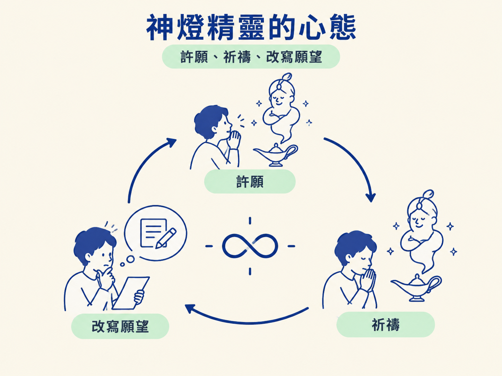
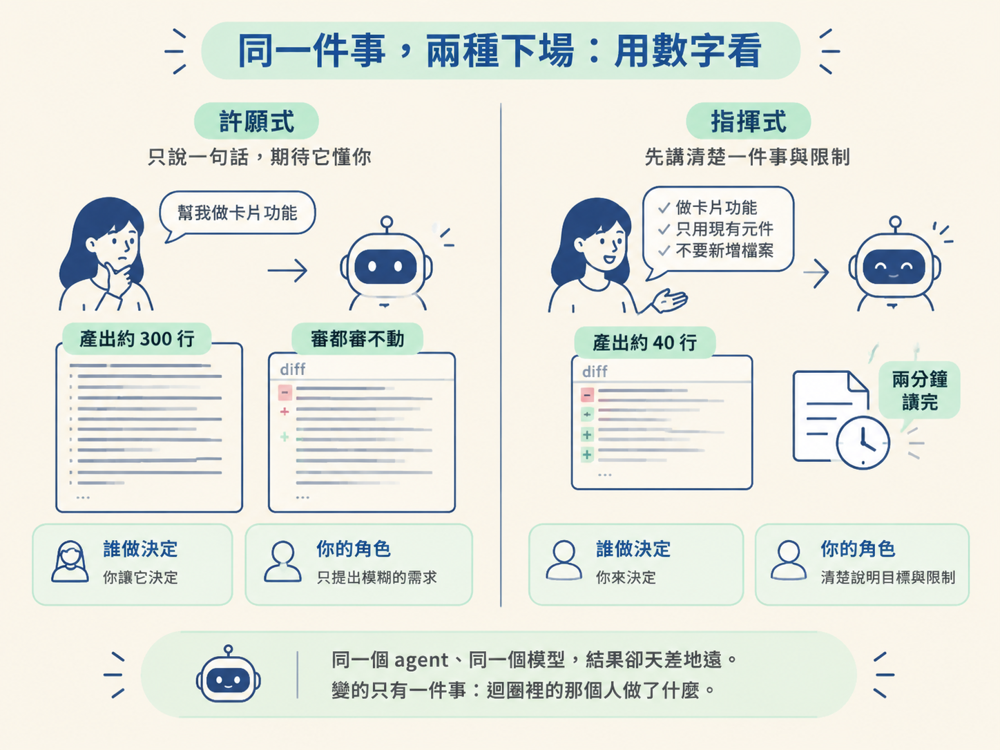
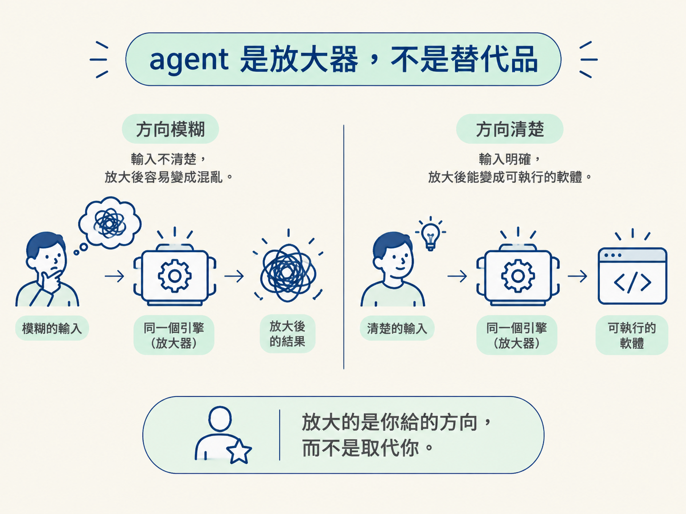

讀完這一節，你要能把「你是架構師、agent 是引擎」這副心態戴上去，取代許願式的 prompt。具體來說：你能說出哪些事該交給 agent、哪些事必須留在自己手上，並且用「一件事、完整 context、可審的輸出」這三個要素，描述一個被指揮的任務。
上一節我們挖出了兩個根因：沒有真 context、沒有真計畫。但這兩個根因還不是最終答案。它們底下，還壓著一個更根本的東西：你對「自己正在跟什麼東西合作」的想像是錯的。
這件事值得單獨拿出來講，因為只要這個想像沒換掉，前面教的所有技巧都會被你塞回原本的迴圈裡繼續燒。技巧沒有錯，是你餵給它的那個心態壞了。
那這個錯誤的想像長什麼樣？說穿了很簡單：大部分人（包括很多很強的工程師）在心裡，是把 AI agent 當成神燈精靈。
神燈精靈的運作方式是這樣：你許一個願，也就是寫一句 prompt；然後你祈禱回來的東西接近你心裡想的；如果不是，你就改寫願望。還是不對，就把願望改得更長、更囉唆。許願、祈禱、改寫願望，這個迴圈永遠不會自己停下來。
為什麼不會停？因為神燈精靈的邏輯是「你負責許願，它負責詮釋」。你只好用更精準的措辭、更刁鑽的漏洞，去逼它吐出對的東西。但精靈永遠可以從你話裡的縫隙鑽出去。
這就是「把 prompt 寫得更神」這條路走到底的樣子：一場沒完沒了的文字遊戲。你試圖用一句話，去控制一件本質上需要好幾個決定才講得清楚的事。輸了是必然的。

換一個模型。你不是向精靈許願的人，你是建築師；agent 不是精靈，是引擎。
這個差別的第一個效果，是把你從「祈禱好輸出的人」變成「決定什麼才叫好輸出的人」。你會設下限制條件，你會做真正的決定，你會在它走偏時說「不，不是那樣，是這樣」。而且（這句話很關鍵）你會理解每一個被做出來的選擇。不是「它跑起來了就好」，而是「我知道它為什麼長這樣」。
引擎那一邊呢？它很快，它不知疲倦，它一小時吐出的程式碼比你一整天親手打的還多。但它沒有判斷力。判斷力是你的工作，而且從來都是你的工作。
如果你看過一位厲害的資深工程師帶 junior，你就懂這個關係了。他不會幫 junior 每一行都寫好，但他也不會丟一句「去把 app 做出來」就走人。
他給的是 context 和方向：先講清楚這是什麼、會動到哪些地方；然後他會看 junior 交回來的東西。而他最重要的價值，是在某個東西即將出錯之前，就把它攔下來。
你跟 agent 的關係就是這樣。唯一的不同是：你這個 junior 一分鐘能打一千個字，而且永遠不會累。
資深工程師的價值，從來不是「打字比誰快」，而是「知道要往哪裡走、看得出什麼是對的」。這兩件事，在你帶 agent 的時候，一項都沒少。
把這個心態放進具體數字裡，差別就很清楚了。假設你只說一句「幫我做卡片功能」：agent 會替你做出二十個你不曾看見的決定，然後交給你一份三百行的 diff。那份 diff 你根本沒辦法好好審。
同一件事，換成「被指揮」的版本：你先把「這張卡片是什麼、它會動到什麼、做完長什麼樣、哪些東西這次不做」講清楚。agent 接到的，是一件被框好的工作，加上真實的限制條件。它交回來的，是一份四十行、你兩分鐘就能讀完的 diff。
同一個 agent、同一個模型，結果卻天差地遠。變的只有一件事：迴圈裡的那個人做了什麼。

| 許願式 | 指揮式 | |
|---|---|---|
| 你給的東西 | 一句模糊的 prompt | 一件事 + 完整 context + 限制 |
| 誰做決定 | agent 用預設值替你決定 | 你定義什麼叫「做完」 |
| 交回來的大小 | 約 300 行、審不動 | 約 40 行、兩分鐘讀完 |
| 你的角色 | 祈禱好輸出的人 | 決定什麼是好輸出的人 |
還有一個很好用的看法：把 agent 當成放大器。它放大的，是你給它的方向。模糊的方向被放大成一團亂；清楚的方向被放大成一份能跑的軟體。同一個引擎，差別只在你灌進去的是什麼。
順著這個看法，很多人「怕被取代」的焦慮其實可以整個翻過來。會怕，通常是因為以為「會寫程式」的價值要被取代了。但實際上是反的：只知道怎麼許願的人，才是可以被取代的，隨便一個人都能打出一句模糊的 wish。
真正變得更有價值的，是能把一個模糊的問題，變成一條引擎能執行的清楚方向的人。這種人，公司會想辦法留下來。而這門課要讓你變成的，就是這種人。

這門課剩下的部分，你只要做一件事：每當你發現自己又滑進「許願」的模式，就停下來。在你衝動地丟出一句模糊的 prompt、然後開始祈禱之前，先問自己：如果是一位資深工程師來處理這件事，他會怎麼做？
答案幾乎都會是同一個：不是許願，是指揮。而一個被指揮的任務，形狀其實很固定，就是把四件事說清楚：這是什麼、它會動到什麼、做完長什麼樣、哪些東西這次不做。把這四件事講出來，你就從精靈的客戶，變成了引擎的建築師。
兩個根因（沒 context、沒計畫）底下，壓著的是一個錯誤的心態：把 agent 當神燈精靈，許願、祈禱、改寫願望。正確的心態是「你是架構師，agent 是引擎」：你設限制、做真正的決定、定義什麼叫做好，它提供速度與不知疲倦。這就像資深工程師帶 junior：不代寫每一行，但給 context、給方向、在出錯前攔下來。agent 是放大器，放大你給的方向；所以會被取代的是只會許願的人，更有價值的是能把模糊問題變成清楚方向的人。行動指令只有一句：發現自己在許願時，停下來，問「資深工程師會怎麼做」，然後去指揮。
心態換好了，下一節把它放進一個具體的對照。我們會看兩個開發者拿同一句「幫我做結帳功能」，一個土法煉鋼、一個像工程師一樣指揮，然後用判別問句檢查你自己現在站在哪一邊。